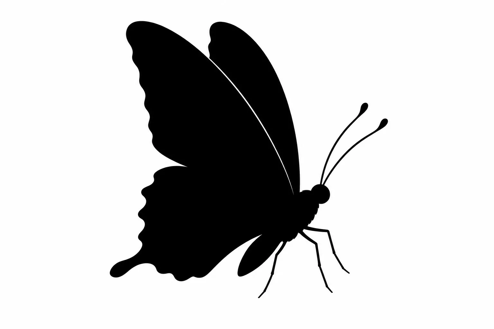

Category
Work 01
企画・デザイン・運用
SNS DESIGN & DIRECTION

SNSやWebのデザインを通じて、
誰かの人生をそっと動かしたい。
「蝶」。
変化や美しさの象徴であると同時に、
一羽の蝶のささやかな羽ばたきが、
巡り巡って地球の反対側で大きな変化を起こす──。
デザインも同じだと思っています。
画面の中の小さな一枚が、
誰かの心を動かし、行動を生み、
やがてその人の人生を変えていく。
ただ「綺麗なもの」ではなく、
「人の背中をそっと押せるもの」。
あなたのブランドの、その羽ばたきの一翼を、
私に担わせてください。


Instagramを中心とした投稿デザイン、ストーリーズ、リールカバーなど。ブランドの世界観をひと目で伝えるビジュアルを設計します。
主戦場はInstagram。デザイン制作だけでなく、戦略設計・投稿企画・分析改善まで一貫してサポートします。「作って終わり」ではなく、数字と向き合いながら成果に伴走します。
リール、TikTokなどのショート動画編集を得意としています。テンポ・色味・テロップで"見られる"動画に仕上げます。
ファッション分野でのビジュアル制作にも強みがあります。ブランドのトーンに寄り添った、空気感のあるデザインをお届けします。
企画・デザイン・運用

企画・デザイン・運用

企画・デザイン・運用

企画・デザイン・運用

企画・デザイン・運用

企画・デザイン・運用

フォームよりお気軽にご連絡ください。ご相談・お見積もりは無料です。
オンラインにて、目的・ターゲット・ブランドイメージを丁寧にお伺いします。全国どこからでもご依頼いただけます。
ヒアリング内容をもとに、最適なプランとお見積もりをご提示します。
内容にご納得いただけましたら契約。デザイン・運用に着手します。進捗は随時共有します。
ご確認・修正対応を経て、納品または投稿開始。
SNS運用の場合は、毎月の分析と改善提案を継続的に行います。一羽の蝶を、長く美しく舞わせるために。
SNS運用代行は最低3ヶ月〜、デザイン単発のご依頼は1案件〜お受けしています。
プロジェクトの規模や内容により異なります。ヒアリング後に個別にお見積もりをお出しします。
はい、オンラインでの打ち合わせを基本としていますので、全国どこからでもご依頼いただけます。
もちろん可能です。SNSデザインのみ、運用代行のみ、動画編集のみなど、ご希望に合わせて柔軟にお受けします。
はい、アカウントの状況やご要望に応じて、柔軟にプラン内容を見直すことができます。
はい、業種は問わずお受けしています。ヒアリングを通じてブランドの世界観を理解し、最適なデザインをご提案します。